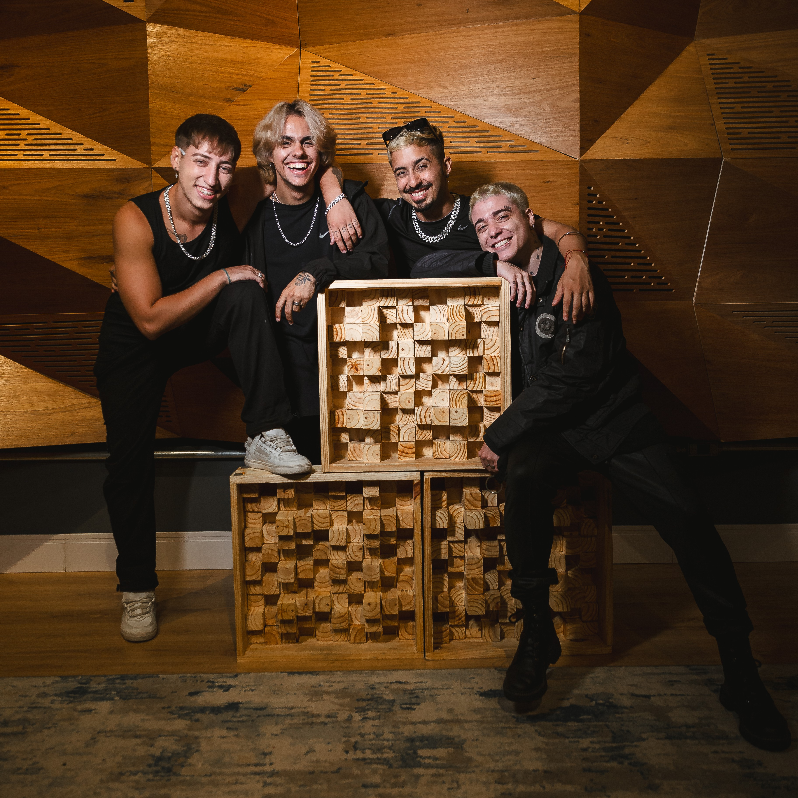
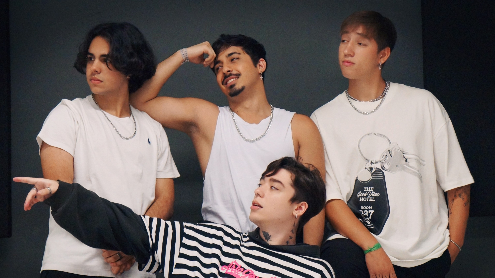
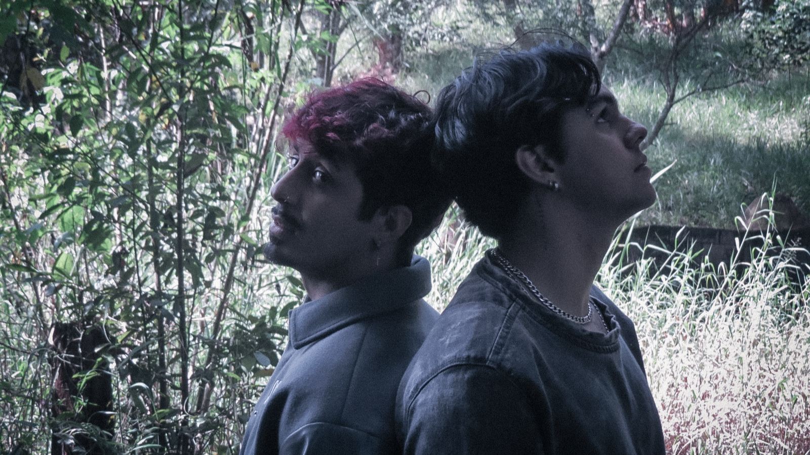
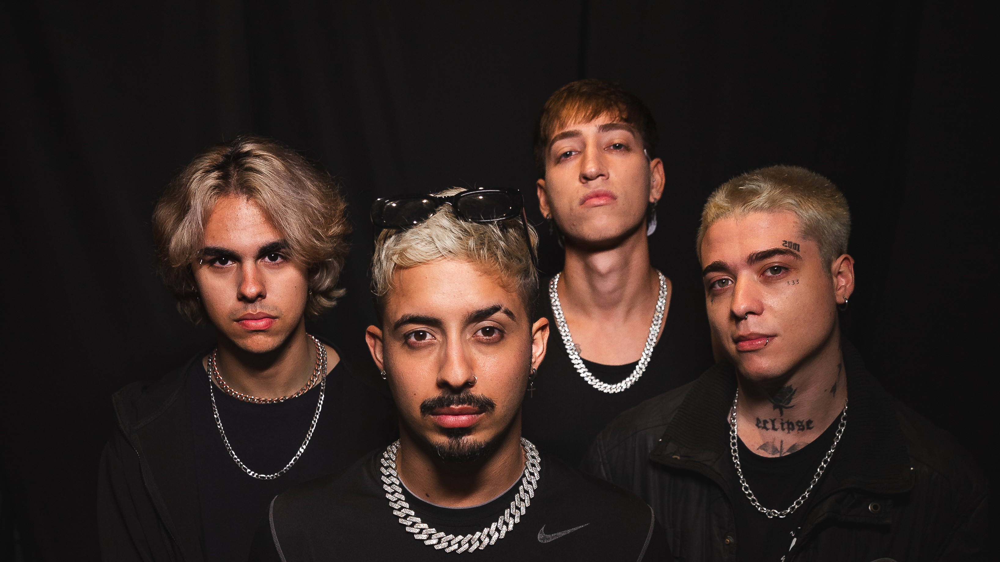

Conheça a história, os membros e a energia por trás do grupo.

Formado em São Paulo em 2023, o MAYDAY é um grupo pop que combina talento, criatividade e uma presença cativante. Composto por Yago Tiger, Leo LR, SHIN e Nickz, o grupo vem ganhando destaque desde suas primeiras apresentações.
Autêntico e dedicado, o MAYDAY transforma cada trabalho em uma expressão de suas ideias e vivências, criando um som que é, ao mesmo tempo, envolvente e impactante.
Carregando uma energia única que conecta diferentes públicos, o grupo se consolidou como uma das promessas mais vibrantes da cena pop brasileira.
Formado em São Paulo em 2023, o MAYDAY é um grupo pop que combina talento, criatividade e uma presença cativante. Composto por Yago Tiger, Leo LR, SHIN e Nickz, o grupo vem ganhando destaque desde suas primeiras apresentações, carregando uma energia única que conecta diferentes públicos.
Desde o início, o MAYDAY se aventurou por palcos de São Paulo e, rapidamente, expandiu sua trajetória para cidades como Belo Horizonte e Brasília, consolidando seu nome na cena.
Em maio de 2024, lançaram a música "Armadilha", uma estreia que alcançou mais de 30 mil visualizações no YouTube e ultrapassou 10 mil streams em plataformas digitais. O sucesso da faixa foi seguido pelo lançamento do EP "CICLO: Armadilha", que já soma mais de 20 mil streams, marcando um importante capítulo na história do grupo.
Autêntico e dedicado, o MAYDAY transforma cada trabalho em uma expressão de suas ideias e vivências, criando um som que é, ao mesmo tempo, envolvente e impactante.


